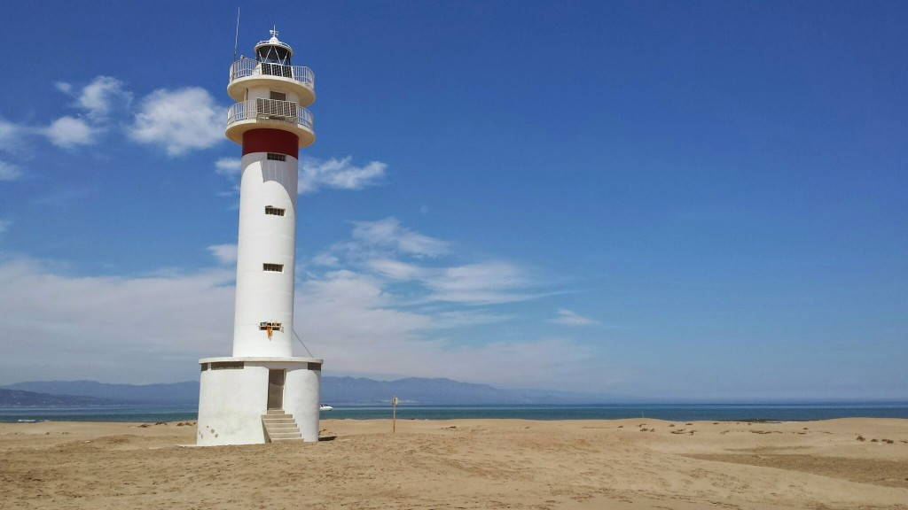
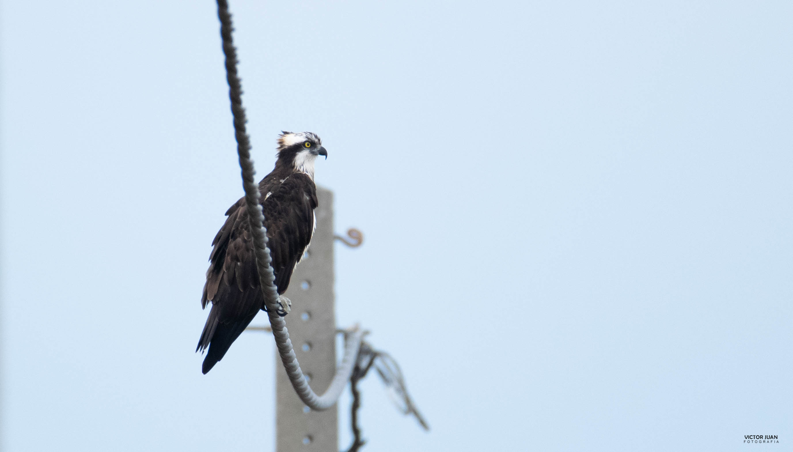

1 / 3

2 / 3

3 / 3

El Fangar és la península que s'endinsa a la mar al nord de la desembocadura de l'Ebre, davant la badia del Fangar. És tracta una extensa fletxa litoral que inclou el sistema de sorrals i dunes mòbils més ben construït del Delta. Des del punt de vista de la fauna, l'aspecte més destacat és la importància de la zona per a la cria dels ocells marins. Té, a més, una considerable importància com a àrea de refugi i alimentació d'espècies d'ocells aquàtics migratoris. La península té uns 6 km de llargada i 3 Km d'amplada màxima, fins arribar al seu extrem, que rep el nom de punta del Fangar. El moment més aconsellable per a visitar-la és a la primavera. És en aquesta època (coincidint amb l'època de nidificació) quan acull un bon nombre de colònies d'aus marines que es poden observar fàcilment des dels observatoris situats a l'esquerra de les pistes d'accés.